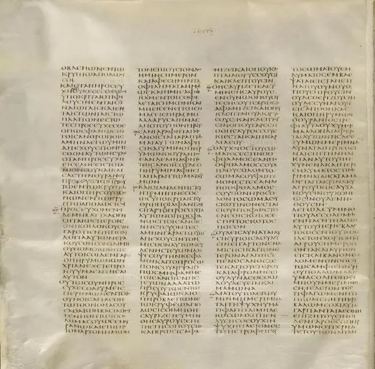
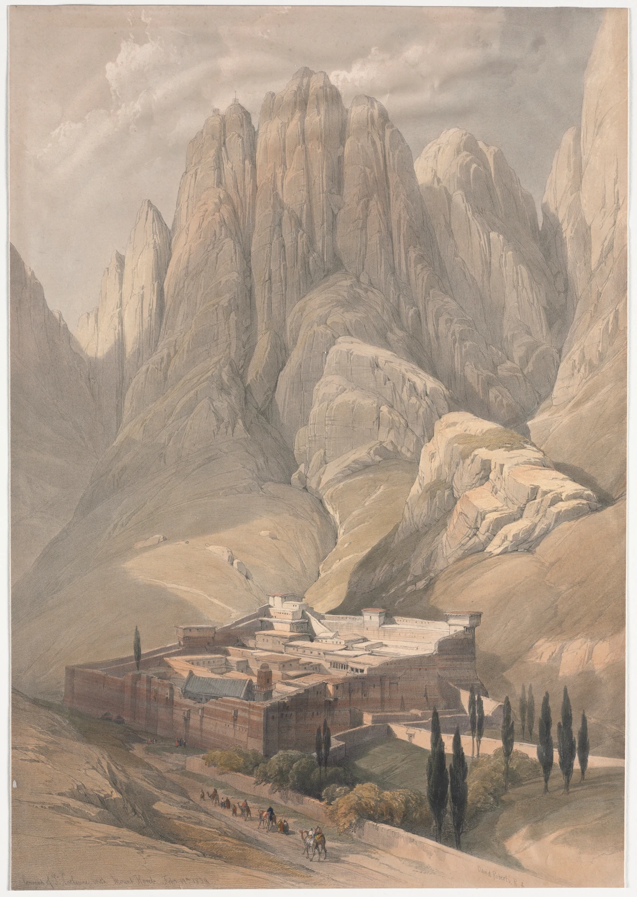
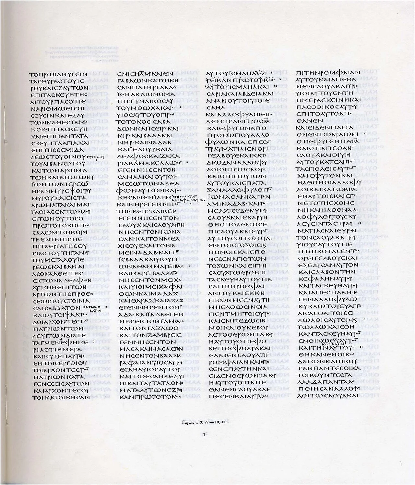
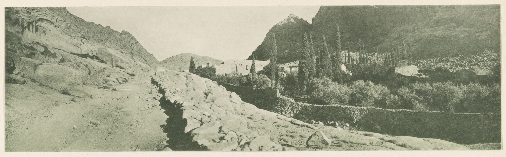
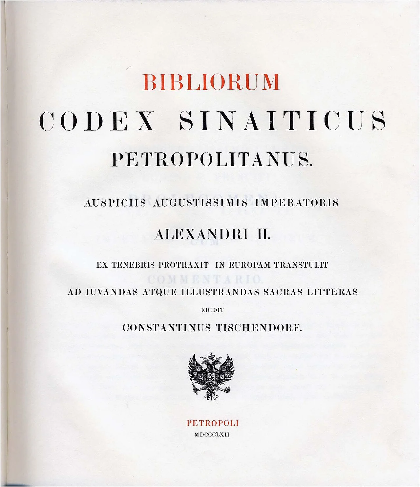

아직 펼치지 않은 카드흩어지고 사라질 뻔한 책 · 2티셴도르프와 시나이 사본4세기 성경이 수도원을 떠나 네 곳으로 흩어졌어요. 이 책은 어떻게 수도원을 떠났을까요?아주 오래된 성경이 여기저기 흩어졌대. 어떻게 된 일일까?
1844~1862년이집트 시나이 성 카타리나 수도원 → 카이로 → 상트페테르부르크
티셴도르프와 시나이 사본
1859년 2월 4일 저녁, 시나이의 수도원에서 붉은 천에 싼 꾸러미가 풀렸어요. 그 책은 그해 가을 ‘돌려주겠다’는 증서와 함께 수도원을 떠났고, 3년 뒤 인쇄본의 제목 쪽에는 ‘어둠에서 끌어냈다’고 새겨졌어요. 그 제목을 한 줄씩 펼쳐 읽으며, 같은 일을 두 기록이 어떻게 적었는지 견주어 보세요.
아주 오래된 성경이 빨간 천에 싸여 있었대. 그 책이 어떻게 먼 나라로 갔는지, 옛 책의 첫 쪽을 펼쳐 읽어 볼까?
검수 전 시안이에요(기준서 1판). 같은 일을 서로 다르게 기억하는 이야기라, 누구의 기록인지 문장마다 밝혔어요. 장면에는 기록에 있는 것만 옮겼고, 상상은 ‘눈 감고 상상해 보기’에만 썼어요.
시안 확인용카드 단계 미리 보기
1
1844년, 바구니 이야기
1844년, 독일 라이프치히의 학자 콘스탄틴 폰 티셴도르프는 시나이산 기슭의 성 카타리나 수도원을 찾았어요. 수도사들은 그에게 오래된 그리스어 성경의 구약 낱장 129장을 보여 주었고, 그는 그 가운데 43장을 얻어 라이프치히로 가져갔어요(시나이 사본 누리집). ‘사본’은 복사본이 아니라, 인쇄가 없던 때 손으로 베껴 쓴 책을 말해요.
그는 훗날, 도서관 한가운데에 ‘오래된 양피지가 가득 든 크고 넓은 바구니’가 있었고 사서가 이런 종이 더미 두 개는 벌써 불에 넣었다고 말했다고 썼어요. 수도사들이 43장을 선뜻 내준 것도 ‘어차피 불에 들어갈 것’이어서였다고 적었어요(티셴도르프, 1866년 영어판).

1844년의 일을 전하는 기록은 그의 글밖에 없어요(시나이 사본 누리집). 이 책을 오래 연구한 오늘날의 학자 데이비드 파커는 “수도사들은 바구니에 도서관 사본을 넣어 두었다. 그리고 양피지는 태워도 열이 나지 않는다”며 이 이야기를 믿지 않아요(『타임』 2009 · 이 안내서가 옮김). 바구니는 사본을 넣어 두던 그릇이었고, 양피지는 땔감으로 쓸모가 없다는 거예요.
그림은 그가 처음 찾아가기 다섯 해 전인 1839년, 스코틀랜드 화가 데이비드 로버츠가 그린 수도원과 호렙산이에요. 성경은 하나님의 산을 호렙산이라고도(출애굽기 3장 1절), 시내 산이라고도(19장 20절) 불러요. 낙타를 탄 사람들이 수도원 담으로 다가가는데, 그가 오기 전의 그림이라 이 가운데 그는 없어요.
티셴도르프 아저씨는 낙타를 타고 사막의 수도원에 갔어.
물어보기바구니에 담긴 옛날 종이는 정말 불쏘시개였을까?
2
1859년 2월 4일 저녁
1859년 1월 말, 그는 러시아 황제 알렉산드르 2세의 후원을 받아 세 번째로 수도원에 닿았어요(두 번째는 1853년이었어요). 2월 4일, 수도원의 살림을 맡은 집사와 산책하고 돌아온 해 질 녘, 집사가 그에게 자기 방에서 다과를 들고 가라고 했어요(티셴도르프, 1866년 영어판 · 시나이 사본 누리집).
방에 들어서자 집사가 말했어요. “나도 칠십인역을 읽었지요.” 칠십인역은 그리스어로 옮긴 구약 성경이에요. 집사는 방구석에서 붉은 천에 싼 묵직한 꾸러미를 꺼내 그 앞에 놓았어요. 꾸러미에는 15년 전 그가 바구니에서 꺼냈지만 가져가지 못한 낱장들, 다른 구약의 책들, 그리고 신약 전체가 있었어요(티셴도르프, 1866년 영어판). 그는 이날 처음으로 이 347장을 보았어요(시나이 사본 누리집).

“그 밤 곧바로 바르나바의 편지를 베꼈다. 이런 그리스도교의 보물 곁에서 잠드는 것은 죄처럼 여겨졌다.”
티셴도르프, 『시나이 성경 사본 머리말』(1862) · 라이프치히 대학교 도서관의 영어 옮김을 이 안내서가 우리말로 옮김
그는 “등불은 흐리고 밤은 추웠지만, 나는 곧바로 앉아 바르나바의 편지를 베꼈다”고도 적었어요(티셴도르프, 1866년 영어판 · 이 안내서가 옮김). 바르나바의 편지는 신약에 들지 않은 초기 그리스도인의 글로, 이 사본에는 요한계시록 뒤에 이어져 있어요(영국도서관).
사진은 그 꾸러미의 첫 장을 1862년 인쇄본이 본뜬 쪽이에요. 이 장은 지금 런던 영국도서관에 있는 347장의 첫 장이고, 역대기상 9장 27절에서 시작해요. 첫 줄은 아침마다 성전 문을 여는 문지기들의 이야기예요(영국도서관). 15년 전 라이프치히로 간 43장도 바로 이 책에서 떨어져 나간 장들이에요(영국도서관).
해 질 녘, 수도사 아저씨가 빨간 천에 싼 꾸러미를 꺼냈어. 그 안에 아주 오래된 성경이 있었대!
물어보기그날 밤 티셴도르프 아저씨는 왜 잠을 자지 않았을까?
3
돌려주겠다는 증서
꾸러미는 2월 24일 수도원의 카이로 분원으로 옮겨졌어요. 분원은 수도원이 도시에 둔 집이에요. 3월부터 5월까지 그는 한 번에 한 묶음씩 받아 베껴 썼어요(시나이 사본 누리집).
그해 9월, 그는 베낀 것을 사본 그 자체와 견주어 보도록 책을 상트페테르부르크로 가져가겠다고 했어요. 러시아 대사 로바노프는 편지에 ‘수도원이 이 책을 황제에게 바치는 일(기증)이 이루어질 때까지 주인은 수도원’이라고 적었고, 수도사 모임이 그 조건을 받아들였어요. 그리고 티셴도르프가 아래 증서에 서명했어요(시나이 사본 누리집 · 성 카타리나 수도원).

“이 사본을, 시나이의 거룩한 형제회가 처음 요청하는 대로, 상하지 않고 좋은 상태로 돌려줄 것을 약속합니다.”
티셴도르프의 빌림 증서(1859년 9월 16일 · 옛 율리우스력 날짜, 지금 달력으로는 9월 28일) · 해리 갬블의 글(스미스소니언)에 실린 영어 옮김을 이 안내서가 우리말로 옮김
증서의 ‘형제회’는 수도원의 수도사 모임이에요. 이 증서는 수도원의 소장품 목록에 올라 있어요. 수도원의 설명은 이 일을 ‘출판을 위해 빌려준 것이고, 주인은 수도원’이라고 적어요(성 카타리나 수도원). 사진은 1914년 북쪽에서 찍은 수도원이에요(미국 의회도서관).
1859년 9월 카이로. 나는 수도원 분원의 수도사예요. 이 책을 어떻게 할까요?
아저씨는 ‘다 보고 꼭 돌려줄게요’ 하는 종이에 이름을 썼어.
물어보기내가 수도사라면, 이 책을 빌려줄까?
4
제목 쪽을 펼쳐 읽기
1862년, 그는 러시아 정부의 후원으로 이 사본을 네 권의 인쇄본으로 펴냈어요. 327부를 찍어 큰 도서관과 학자들에게 보냈고, 두 부는 성 카타리나 수도원에 갔어요(러시아 국립도서관). 사진으로 만든 석판 그림 21장도 넣었어요(가톨릭 앤서스).
그해 11월 10일, 그는 차르스코예 셀로(‘황제의 마을’이라는 뜻)의 궁에서 이 인쇄본과 손으로 쓴 사본 그 자체를 함께 황제에게 바쳤어요(시나이 사본 누리집 · 러시아 국립도서관). 아래 굴대(종이를 감은 막대)를 끌어 내리며 인쇄본의 첫 쪽, 제목을 한 줄씩 펼쳐 읽어 보세요.
종이 아래쪽 굴대를 끌어 내리거나 ‘한 줄 더 펼치기’를 눌러, 제목을 위에서부터 한 줄씩 읽어 보세요.

1862년 인쇄본의 제목 쪽(상트페테르부르크) · 1862년 티셴도르프의 인쇄본 · 퍼블릭 도메인 · 위키미디어 공용
펼친 만큼 줄이 읽혀요. 읽은 줄은 아래에 차례로 모여요.
끝까지 펼쳤어요. 같은 일을 이 쪽은 ‘어둠에서 끌어냈다’고, 1859년의 증서는 ‘돌려주겠다’고 적었어요.
수도원은 1869년 11월에야 기증 문서에 서명했어요(시나이 사본 누리집). 러시아 국립도서관은 수도원이 그때 러시아 정부에게서 9,000루블을 받았다고 적어요. 1933년 12월, 소련 정부는 이 책을 영국박물관에 팔았어요. 지금은 영국도서관에 있어요(영국도서관).
1975년 5월 26일, 수도원 북쪽 담의 성 게오르기오스 경당(작은 예배당) 아래 방을 치우던 수도사들이 이 사본의 낱장과 조각을 새로 찾았어요. 수도원에는 지금 적어도 18장과 조각이 있어요(시나이 사본 누리집).
그래서 이 책은 지금 런던 · 라이프치히 · 상트페테르부르크 · 시나이, 네 곳에 나뉘어 있어요(영국도서관).
아저씨는 이 책을 똑같이 찍은 책을 만들었어. 첫 쪽에 무엇이라고 썼을까?
물어보기‘어둠에서 끌어냈다’는 말을 수도원 사람들이 들으면 어떤 마음일까?
눈 감고 상상해 보기
1859년 2월 4일 밤, 시나이의 수도원. 등불은 흐리고 밤공기는 차가워요. 풀어 둔 붉은 천 위에 누런 양피지가 켜켜이 쌓여 있어요. 들리는 것은 펜 끝이 종이를 긁는 소리뿐. 창밖이 밝아 올 때까지, 그는 한 줄씩 베껴 써요.
눈을 감아 봐. 깜깜한 밤, 작은 등불 하나. 사각사각 펜 소리. 아저씨는 밤새 오래된 성경을 베껴 써.
나의 자리
‘어둠에서 끌어냈다’는 제목과 ‘돌려주겠다’는 증서를 다 읽은 지금, 이 책이 수도원을 떠난 일을 나는 어떤 말로 부르고 싶나요?
이 책 이야기를 친구에게 들려준다면, ‘구해 냈다’고 할까, ‘빌려 갔다’고 할까?
마음에 닿는 한 줄을 고르거나 직접 써 보세요. 한 줄을 남기면 이 자리의 도장이 찍혀요. 이 기기에만 저장돼요.
더 깊이
이야기를 보다 궁금해질 만한 것들이에요. 답을 읽거나 짧은 영화로 보세요.
티셴도르프는 왜 사막까지 갔을까요?
수도원은 왜 열 해 뒤에야 기증 문서에 서명했을까요?
뒷이야기
아직 펼치지 않은 이야기예요. 누르면 이야기가 펼쳐지고 색이 돌아와요. 더 알고 싶으면 근거를 따라가 보세요.
다 펼치면, 다음에 오실 때 새 이야기가 찾아와요.
오늘의 뒷이야기는 여기까지예요. 다음에 오시면 새 이야기가 기다리고 있어요.
펼친 뒷이야기 · 누르면 다시 볼 수 있어요
더 찾아보기
기록마다 다른 점
바구니 이야기 그의 1866년 글에만 나와요. 시나이 사본 누리집은 1844년 일을 전하는 다른 기록이 없다고 적고, 학자 데이비드 파커는 이 이야기를 믿지 않아요(『타임』 2009). 수도사들이 낱장을 태웠는지는 지금 수도원 사람들도 강하게 반박해요(히스토리 오브 인포메이션).
숨길 수 있었을까 1866년 영어판에서 그는 그날의 기쁨을 ‘이번에는 집사와 수도사들에게 숨길 수 있었다’고 적었어요. 라이프치히 대학교 도서관이 옮긴 1862년 머리말에는 ‘이 발견이 준 큰 감동을 감출 수 없었다’고 적혀 있어요.
빌려준 것일까, 합의한 것일까 수도원의 설명은 ‘출판을 위해 빌려준 것, 주인은 수도원’이라고 적고, 러시아 국립도서관은 ‘시나이 공동체와의 합의로 가져갔다’고 적어요. 기증 문서는 1869년 11월 13일과 18일(옛 달력)에 두 번 서명됐어요(시나이 사본 누리집 · 성 카타리나 수도원 · 러시아 국립도서관).
수도원이 받은 돈 러시아 국립도서관은 수도원이 9,000루블을 받았다고 적고, 위키백과는 수도원에 7,000루블, 다볼산 수도원에 2,000루블로 나눠 적어요. 시나이 사본 누리집에는 돈 이야기가 없어요.
함께 읽는 말씀
말씀은 뜻만 옮기고, 본문은 대한성서공회 개역개정으로 이어 드려요.
역대기상 9장 27절 꾸러미의 첫 장이 시작하는 구절이에요. 하나님의 성전을 맡은 문지기들이 성전 둘레에서 밤을 지내고, 아침마다 문을 열었다는 이야기예요.
집에서 보기
확인한 날 · 2026년 11월 18일 · 바뀌기 쉬운 정보라 정기적으로 다시 확인해요
네 기관이 함께 만든 시나이 사본 누리집에서 이 책의 모든 쪽을 볼 수 있어요. 성 카타리나 수도원의 소장품 누리집에서는 1859년의 증서 사진과 수도원의 설명을 볼 수 있고, 한국어 메뉴도 있어요.
제목 쪽 끝까지 금박
1862년 인쇄본의 제목을 끝까지 펼쳐 일곱 줄을 다 읽으면 카드에 금박이 입혀져요.
제목 쪽을 끝까지 펼쳐 일곱 줄 읽기
1859년 카이로의 수도사 채색
둘 가운데 하나만 해도 카드가 채색돼요.
1859년 카이로 분원의 수도사가 되어 이 책을 어떻게 할지 고르기
아이와 함께 ‘영화처럼 보기’를 끝까지 보기
근거 보기 (23)
- 시나이 사본 누리집(영국도서관 · 라이프치히 대학교 도서관 · 러시아 국립도서관 · 성 카타리나 수도원): History of Codex Sinaiticus — 1844년 129장 가운데 43장(다른 기록 없음), 1853년 책갈피 조각, 1859년 2월 4일 347장, 2월 24일 카이로 분원, 3~5월 한 묶음씩, 9월 16/28일 빌림 증서와 로바노프의 편지, 1862년 11월 10일 차르스코예 셀로, 1869년 11월 13/25·18/30일 기증 문서, 1933년, 1975년 5월 26일 성 게오르기오스 경당 아래 방, 적어도 18장
- Tischendorf, When Were Our Gospels Written?(1866, 미국 소책자 협회 · TC 누리집 발췌) — 바구니와 불, 43장, 1월 말 도착, 2월 4일 산책·해 질 녘·집사의 방, ‘나도 칠십인역을 읽었다’, 붉은 천, 15년 전 낱장·구약·신약 전체, 기쁨을 숨김, 흐린 등불·추운 밤·바르나바의 편지, 카이로에서 황제에게 바치자고 권함
- 라이프치히 대학교 도서관: Codex Sinaiticus 상설 전시 — 1844년 43장, 티셴도르프 1862년 머리말(11~12쪽)의 말: 천을 풀자 기대를 넘는 것, 감동을 감출 수 없었음, 그 밤 바르나바의 편지를 베낌·잠드는 것은 죄, 1975년 6월 12장과 조각 40점
- 영국도서관 목록: Add MS 43725 1권 — 1장 앞면 첫 줄(역대기상 9:27, 성전 문을 아침마다 엶), 1장 앞·뒤 = 역대기상 9:27~11:22
- 영국도서관 목록: Add MS 43725(Codex Sinaiticus) — 바르나바의 편지와 헤르마스의 목자, 라이프치히 43장(프리드리히 아우구스트 사본)·러시아 국립도서관 조각·시나이 18장과 조각, 1859년 황제에게, 1869년 마침, 1933년 12월 소련 정부에게서 삼
- 스미스소니언 국립아시아미술관: Codex Sinaiticus(해리 갬블) — 빌림 증서의 문장, 1975년의 새 낱장
- 성 카타리나 수도원 소장품: Letter/Affidavit by K. Tischendorf on September 16th/28th 1859 — 출판을 위해 빌림, 주인은 수도원, 로바노프의 9월 10일 편지, 9월 16일 수도사 모임, 이그나티예프의 압박, 1869년
- 러시아 국립도서관: Codex Sinaiticus and the Manuscripts of Mt Sinai — 1859년 9월 합의로 가져감, 1862년 327부(227부는 정부 결정으로, 2부는 수도원), 2만 루블, 1862년 11월 10일, 1869년 기증 문서, 9,000루블, 1933년 12월
- TIME(2009, 엘리자베스 디아스): Top 10 Surprising Facts About the World’s Oldest Bible — 바구니 이야기와 데이비드 파커의 말, 1975년의 새 낱장
- Catholic Answers(가톨릭 백과사전): Codex Sinaiticus — 1862년 인쇄본 네 권, 사진으로 만든 석판 그림 21장
- History of Information: Tischendorf Discovers and Acquires the Codex Sinaiticus — 수도사들이 낱장을 태웠는지 지금 수도원 사람들이 강하게 반박
- 마르부르크 대학교 도서관 디지털 사본(OpenAIRE): Bibliorum codex Sinaiticus Petropolitanus — 제목 옮겨 적기
- Wikipedia: Codex Sinaiticus — 길잡이(7,000루블과 2,000루블)
- Tischendorf, When Were Our Gospels Written?(1866, CCEL 전문) — 성경 쓴 이의 펜에서 나온 그대로의 본문을 되살리려 함, 먼 여행과 큰돈, 보물은 주로 동방의 수도원에서, 1856년 가을 러시아 정부에 낸 계획(동방 수도원들의 황제 존경), 1844년 3분의 1(마흔다섯 장쯤)과 너무 기뻐해 산 의심, 1853년 창세기 열한 줄 조각, 1859년 2월 7일 러시아 깃발, 바르나바의 편지(두 세기 동안 못 찾은 앞부분 그리스어 원문), 정교회 신앙의 보호자인 황제, 대주교 선출과 예루살렘 총대주교의 반대
- Bart Ehrman(어만 블로그): The Discovery of Codex Sinaiticus — 약혼녀에게 쓴 ‘거룩한 일’, 지워진 5세기 신약 사본(에프라임 사본)을 약품으로 읽어 냄
- Manuscript Hunters(뮌헨 대학교): Codex Sinaiticus Luxury Edition — 사진은 아직 쓸 수 없었음, 글자마다 8가지쯤의 활자, 글자 사이 틈, 양피지를 닮은 종이
- Catholic Encyclopedia(New Advent): Codex Sinaiticus — 창세기~에스라가 심하게 떨어져 나감, 1853년 창세기 조각 둘, 사진으로 만든 석판 21장
- The New Schaff-Herzog Encyclopedia 452쪽(CCEL) — 1853년 성인전 책의 책갈피, 창세기 23장 몇 구절
- ICOMOS 평가서: The Saint Catherine Area(Egypt) No 954(2002, 유네스코 세계유산) — 교회 남서쪽 사원(1101~1106년)과 첨탑, 1871년 종탑과 러시아 황제의 종 아홉
- Wikipedia: Epistle of Barnabas · Lord’s Prayer · Constantine Simonides · Codex Vaticanus · Septuagint — 길잡이(뒷이야기마다 적음)
- 위키미디어 공용: Codex Sinaiticus Matthew 6,4-32 — 앞면 카드 그림(마태복음 6:4~32)
- 개역개정(대한성서공회): 출애굽기 3:1 ‘하나님의 산 호렙’, 19:20 ‘시내 산’, 마태복음 6:13 끝맺음은 괄호 안
- 위키미디어 공용: 1862년 인쇄본 제목 쪽 · 1쪽(역대기상 9:27~10:11) · 데이비드 로버츠 · 1914년 수도원 사진
그림·사진·소리 출처
- 그림: 데이비드 로버츠 · 퍼블릭 도메인 · 클리블랜드 미술관 · 위키미디어 공용
- 1862년 티셴도르프의 인쇄본 · 퍼블릭 도메인 · 위키미디어 공용
- 사진: 베른하르트 모리츠 · 퍼블릭 도메인 · 미국 의회도서관 · 위키미디어 공용
- 1862년 티셴도르프의 인쇄본 · 퍼블릭 도메인 · 위키미디어 공용
- 그림: 데이비드 로버츠 · 퍼블릭 도메인 · 클리블랜드 미술관 · 위키미디어 공용
- 1862년 티셴도르프의 인쇄본 · 퍼블릭 도메인 · 위키미디어 공용
- 1862년 티셴도르프의 인쇄본 · 퍼블릭 도메인 · 위키미디어 공용
- 1862년 티셴도르프의 인쇄본 · 퍼블릭 도메인 · 위키미디어 공용
- 인물 사진이 아니라, 티셴도르프가 세상에 알린 시나이 사본의 한 쪽(마태복음, 4세기)이에요 · 자료: 시나이 사본, 영국 도서관 · 퍼블릭 도메인 · 위키미디어 공용
‘처음 만나는 기독교 문화’의 깊은 카드예요. 카드 단계와 남긴 글은 이 기기에만 저장돼요.